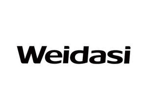

Trade Mark Journal No.2025/017 25 April 2025
UK00004185800 8 April 2025 (9,11,21)

- Class 9
- Protective spectacles; protection devices against X-rays, not for medical purposes; railway traffic safety appliances; measuring instruments; alarms; integrated circuits; materials for electricity mains [wires, cables]; computers; batteries, electric; battery chargers; inverters [electricity]; electric apparatus for commutation; power banks; protective masks, not for medical purposes; filters for respiratory masks, not for medical purposes; respirators for filtering air, not for medical purposes; gender changers in the nature of electrical adapters; converters for electric plugs.
- Class 11
- Radiators, electric; air-conditioning installations; fans [air-conditioning]; air-conditioning apparatus; ventilation [air-conditioning] installations and apparatus; extractor hoods for kitchens; germicidal lamps for purifying air; lamps; kettles, electric; refrigerators; hair dryers; solar water heaters; heaters for baths; dehumidifiers for household purposes; humidifiers; lighting apparatus and installations; disinfectant apparatus; drinking fountains.
- Class 21
- Plug-in diffusers for mosquito repellents; fly swatters; insect traps; rat traps; mouse traps; fly traps; electric devices for attracting and killing insects; containers for household or kitchen use; toothbrushes, electric; heads for electric toothbrushes; utensils for household purposes; kitchen utensils; kitchen containers; electric facial cleansers; electric combs; ultrasonic pest repellers; tableware, other than knives, forks and spoons; cages for collecting insects.
Guangdong Weidasi Electric Appliance Co., Ltd.
Representative: Rina